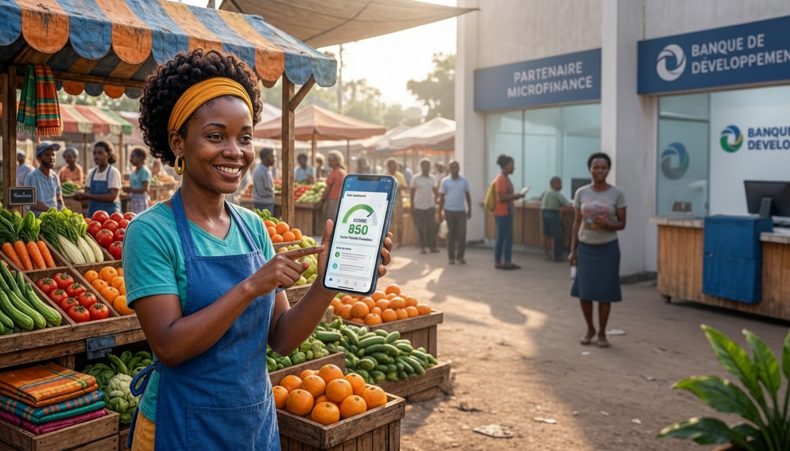

LokalPay Congo : Transformez votre sérieux commercial en opportunités.
La première solution blockchain qui donne une voix financière aux commerçants des marchés de Brazzaville et Pointe-Noire.

La première solution blockchain qui donne une voix financière aux commerçants des marchés de Brazzaville et Pointe-Noire.

Aujourd'hui, plus de 60 % de l'emploi urbain à Brazzaville est informel, mais moins de 15 % des commerçants possèdent un compte bancaire. Sans historique, 90 % des demandes de microcrédits sont refusées. LokalPay change la donne en rendant vos transactions visibles et vérifiables.
La blockchain rend chaque paiement immuable. Votre score de réputation devient une donnée de crédit aussi fiable qu'un relevé bancaire traditionnel pour les institutions de microfinance.